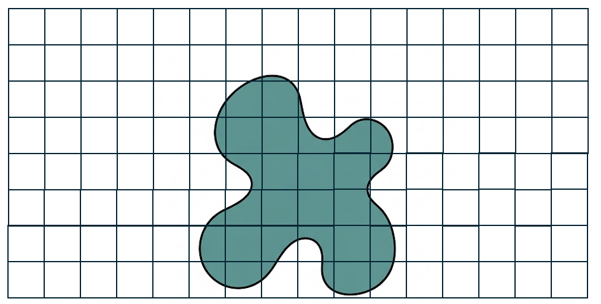
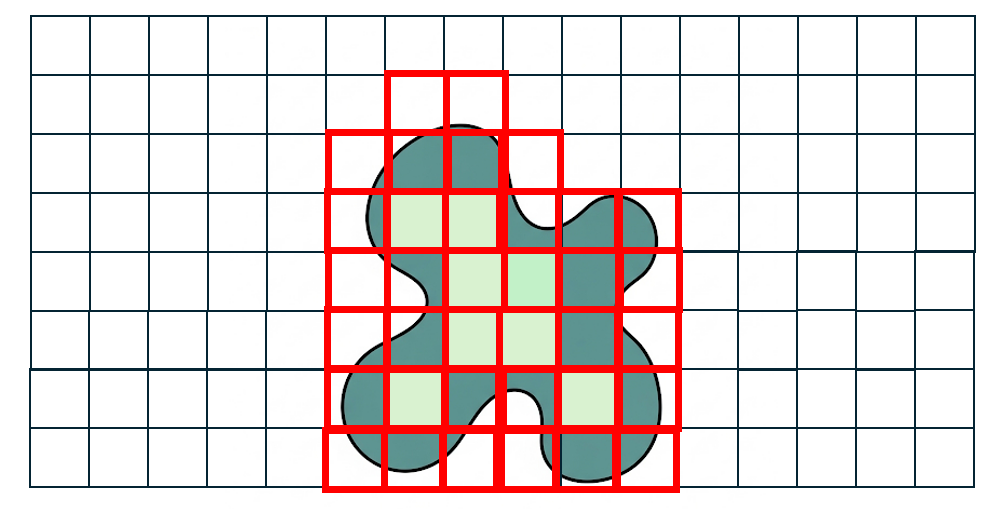
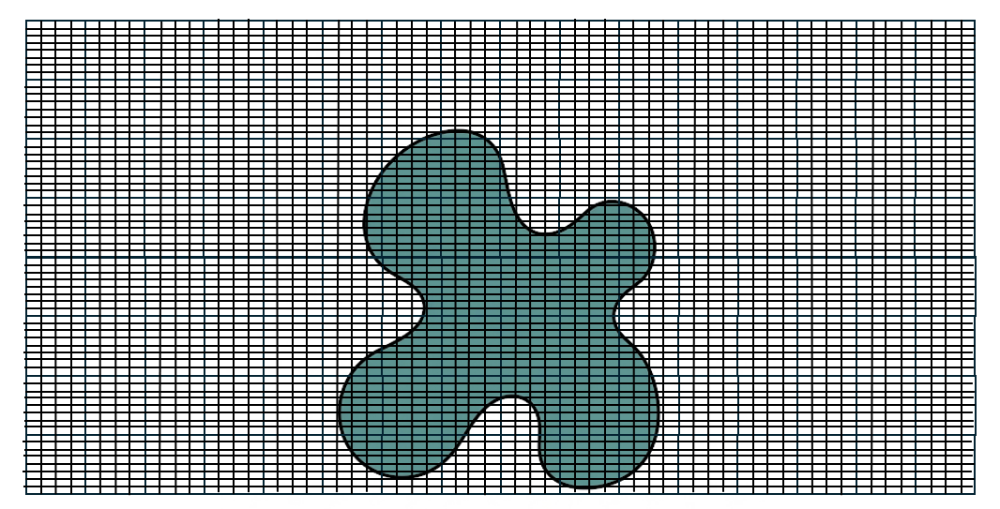

Tal problema nem sempre é trivial. Por exemplo, considerando \(g(x)=I(x<a)\), e \(f(x)\) a função densidade da distribuição normal padrão, temos que
\[F(a)=\int_{-\infty}^a f(x)d=\int_{\mathbb{R}}I(x<a)f(x)dx=E(g(X))\] e, como sabemos, \(F(x)\) não tem expressão analítica.
Neste momento do curso, discutiremos alguns métodos de integração numérica denominados métodos de quadratura. Tais métodos estão intimamente relacionados com a própria definição de integral. Considere que estamos interessados na área em azul da figura abaixo.

Desejamos a área a figura em azul. Para tanto, dividimos a imagem em quadrados de tamanho igual.
Vamos denominar o conjunto de pontos dentro da \((x,y)\) área em azul por \(\mathcal{S}\). O valor da área é dado por
\[A=\int_{(x,y)\in \mathcal{C}}1dxdy\]
Observe que a figura foi dividida em quadrados 128 quadrados de área 1.
Seja \(n_{I}\) o número de quadrados de área um que estão completamente dentro de \(\mathcal{C}\) e seja \(n_S\) o número de quadrados que fazem interseção com \(\mathcal{C}\). Então
\[8=n_I\leq A \leq n_S=36\] e podemos afirmar que \(A\) está entre 8 e 36. A figura abaixo identifica os quadrados 8 quadrados dentro de \(\mathcal{C}\) (em azul claro) e os 36 fora (borda vermelha).

Desejamos a área a figura em azul. Para tanto, dividimos a imagem em quadrados de tamanho igual.
Podemos diminuir aumentar o número de subdivisões. A figura abaixo mostra a mesma região dividida em quadrados de área 1/32. Nela temos \(n_I=561\) e \(n_S=604\), o que resulta em

A mesma imagem, dividida em quadrados de área 1/32.
e, com essa nova subdivisão, podemos afirmar que \(A\in[17,5\;\;,\;\;20,74]\), com foco em funções contínuas na reta.
Podemos continuar subdividindo a imagem até obter um intervalo \(A\in[a,b]\), onde \(|b-a|<\varepsilon\), para qualquer tolerância \(\varepsilon>0\) fixada.
Em termos gerais, suponha que estamos interessados na integral \[\int_a^b f(x)dx.\]
O princípio básico destes métodos de quadratura advém da definição da integral de Riemann: \[\int_a^b f(x)dx = \lim_{n\rightarrow\infty}\sum_{i=1}^{n}(x_i - x_{i-1})f(\tilde{x}_i),
\] onde \(a=x_0<x_1<\cdots<x_{n}=b\) e \(\tilde{x}_i\in [x_{i-1},x_{i}]\). A integral de Riemann pode ser interpretada como a soma das áreas de infinitos retângulos. Uma maneira intuitiva de aproximar a integral de \(f\) é considerar \(n\) finito e grande o suficiente para que
Definition 3.1 Considere a integral \[I=\int_a^b f(x)dx.\]
Um método de quadratura numérica utiliza um conjunto de nós (ou pontos de quadratura) \(\tilde{x}_1,\ldots,\tilde{x}_n\) e um conjunto correspondente de pesos \(w_1,\ldots,w_n\) para aproximar a integral através de \[\hat{I}_n=\sum_{i=1}^n w_if(\tilde{x}_i).\]
Observe que para qualquer intervalo \(D\) sempre é possível utilizar o método da substituição para fazer
\[\int_D g(t)dt=\int_0^1 f(x)dx\] de modo que, para a maioria das integrais definidas, basta discutir o problema de integração no intervalo \((0,1)\). A tabela abaixo mostra algumas integrais e sua respectiva transformação para o intervalo \((0,1)\)
Por simplicidade, vamos considerar apenas o caso \[\int_0^1 f(x)dx.\]
O número de nós. Intuitivamente, é esperado que \[\hat{I}_n\rightarrow I\] quando \(n\rightarrow\infty\). Deste modo, é desejável que \[|I-\hat{I}_n|<\varepsilon,\] para alguma tolerância \(\varepsilon>0\) fixada. Contudo, determinar um limite superior \(|I-\hat{I}_n|\) é impraticável para a maioria dos casos.
Para uma solução prática, escolha \(n_0\) e \(n_1\), onde \(n_1>n_0\) e calcule as integrais \(\hat{I}_{n_0}\) e \(\hat{I}_{n_1}\). Se
\[|\hat{I}_{n_0}-\hat{I}_{n_1}|<\varepsilon,\] aceitamos que o método convergiu e consideramos os \(n_1\) pontos. Caso contrário, um novo conjunto de nós com \(n_2\) pontos, (\(n_2>n_1\)) é selecionado e o processo continua até obtermos
Considere a integral \[I=\int_0^1 f(x)dx\] Os métodos de Newton-Cotes, são métodos de quadratura que dividem o intervalo \([0,1]\) em \(n\) subintervalos de comprimento \(1/n\), definidos pelos pontos \(0=x_0,\ldots,x_n=1\). Vamos apresentar três variantes do método, denominadas regras:
A regra do ponto médio
A regra do trapézio
A regra de Simpson
A regra do ponto médio, considera como conjunto de nós os pontos médios dos subintervalos, ou seja \[\tilde{x}_i=\frac{1}{2}\left[\frac{i}{n}+\frac{i-1}{n}\right]=\frac{2i-1}{2n}.\] Deste modo, a integral
\[\int_{x_{i-1}}^{x_{i}} f(x)dx\] é aproximada pela área do retângulo de base \(1/n\) e altura \(f(\tilde{x}_i)\), ou seja \[\int_{x_{i-1}}^{x_{i}} f(x)dx\approx \frac{f(\tilde{x}_i)}{n}.\]
A fórmula da integral da regra do ponto médio se torna
\[\hat{I}_n=\sum_{i=1}^{n}w_if(\tilde{x}_i)=\frac{1}{n}\sum_{i=1}^{n} f\left(\frac{2i-1}{2n}\right)\] onde \(w_i=1/n\) para \(i=1,\ldots,n\).
Example 3.1 Para exemplificar, considere a integral \[\begin{equation}\label{eq::integral_beta}
\int_0^1 x(1-x)dx,
\end{equation}\] cujo resultado, igual a \(1/6\approx 0,166\), pode ser obtido analiticamente.
Ao escolher o conjunto com \(n=4\), temos \[\begin{align}\hat{I}_4&=\frac{1}{4}\sum_{i=1}^4 f\left(\frac{2i-1}{8}\right)=\frac{1}{4}\sum_{i=1}^4 \left(\frac{2i-1}{8}\right)\left(1-\frac{2i-1}{8}\right)\\&=
\frac{1}{4}\sum_{i=1}^4 \left(\frac{2i-1}{8}\right)\left(\frac{9-2i}{8}\right)=\frac{7+15+15+7}{256}\\&=\frac{44}{256}=0,1660377\end{align}\] A figura abaixo mostra a aproximação desta integral pelos 4 retângulos.
Figure 3.1: A função dada no exemplo Exemplo 1 e os retângulos utilizados para computar a integral via método de Newton-Cotes com a regra retangular.
Exercício. Seja \(n\) o número de intervalos para a regra do ponto médio. No R, \(0=x_0,\ldots,x_n=1\) pode ser obtido pela função
xi = seq(0,1, length = n+1)
e os pontos médios podem ser obtidos utilizando a função
.5* (xi[-1] + xi[-n])
Utilizando essas funções, utilize a regra do ponto médio para resolver a integral \[\int_0^1 x^{3/2}(1-x)^{7/2}dx.\]
A integral acima é um caso particular da função Beta(\(a,b\)), definida por
\[B(a,b)=\int_0^1 x^{a-1}(1-x)^{b-1}dx,\] onde \(a,b>0\). No R, esta função está implementada na função beta(a,b). Compare o valor que você obteve com o valor da função beta(3/2+1, 7/2+1).
Aproxime o valor da integral utilizando a regra do ponto médio. Certifique-se de obter uma tolerância de 0,0001 (quatro casas decimais)
A regra do trapézio aproxima a integral no intervalo pela área de um trapézio. A Figure 3.2 ilustra a regra do trapézio em conjunto com a regra do ponto médio para o primeiro exemplo desta seção.
Figure 3.2: Ambos os gráficos apresentam a função dada no Exemplo 1. (a) Método Newton-Cotes com regra retangular. (b) Método Newton-Cotes com regra trapezoidal.
A regra do trapézio interpola os pontos \((x_{i-1},f(x_{i-1}))\) e \((x_{i},f(x_{i}))\) através de uma linha reta para delimitar o trapézio correspondente. Para o intervalo \((x_{i-1},x_{i})\) a integral \[\int_{x_{i-1}}^{x_{i}}f(x)dx\] é aproximada pela área do trapézio correspondente, dada por
\[\frac{1}{2}(x_{i}-x_{i-1})(f(x_i)+f(x_{i-1}))=\frac{1}{2n}[f(x_i)+f(x_{i-1})]\] Considerando \(0=x_1,\ldots,x_n=1\) igualmente espaçados, teremos que a integral de Newton-Cotes com regra do trapézio é dada por
\[\begin{align}\hat{I}_n=\frac{1}{2n}\sum_{i=1}^{n}[f(x_{i})+f(x_{i-1})]\\&=\end{align}\] Pode-se provar que \[\begin{align}\hat{I}_n=\sum_{i=0}^{n}w_if(x_i),\end{align}\]
ou seja, o conjunto de nós na regra do trapézio são os pontos \(x_0,\ldots,x_n=1\) e \[w_i=\left\{\begin{array}{ll}\frac{1}{2n},&\hbox{ se }i=0\\
\frac{1}{n},&i=1,\ldots,n-1\\\frac{1}{2n},&\hbox{ se }i=n\end{array}\right.\]
A regra de Simpson aproxima \(f(x)\) no intervalo \((x_{i-1},x_i)\) através por um polinômio de grau dois que passa pelos pontos \((x_{i-1},f(x_{i-1})), (\tilde{x}_i,f(\tilde{x}_i))\) e \((x_i,f(x_i))\), onde \(\tilde{x}_i\) é o ponto médio do intervalo. Tal polinômio é dado por \[P(x)=2n^2f(x_{i-1})(x-\tilde{x}_i)(x-x_i)-4n^2f(\tilde{x}_i)(x-x_{i-1})(x-x_i)+2n^2f(x_i)(x-x_{i-1})(x-\tilde{x}_i)\] Considerando que
\[\begin{align}\int_{x_{i-1}}^{x_i}f(x)dx&\approx \int_{x_{i-1}}^{x_i} P(x)dx=\frac{1}{3n}\left[f(x_{i-1})+4f(\tilde{x}_i)+f(x_i)\right]\end{align}\] A intregral obtida pela regra de Simpson é dada por \[\hat{I}_n=\frac{1}{3n}\sum_{i=1}^n [f(x_{i-1})+4f(\tilde{x}_i)+f(x_i)].\]
Exemplo. Utilize a regra de Simpson para aproximar integral \[\int_0^1 x^{5/2}e^{-x}dx\] com uma tolerância igual a 0,0001.
3.2 Quadratura Gaussiana
Seja \(P_n(x)\) um polinômio de grau \(n\). Dizemos que os polinômios \(P_0(x),P_1(x),\ldots,\) são ortonormais para o intervalo \([a,b]\) e para a função de peso \(w(x)\geq 0\) se \[\begin{align}\int_a^b w(x)P_i(x)P_j(x)dx&=0\\\int_a^b w(x)P_i(x)^2dx&=1\end{align}\] para todo \(i\neq j\). Esse polinômios podem ser escritos como \[P_n(x)=k_n\prod_{i=1}^n(x-t_i),\] onde \(k_n>0\) e \(a<t_1<\cdots<t_n<b\) são suas raízes reais.
O seguinte teorema relaciona a integral de uma função \(f\) contínua em \([a,b]\) e os polinômios ortonormais.
Theorem 3.1Teorema Seja \(f(x)\) uma função contínua em \([a,b]\). Para qualquer polinômio ortonormal \(P_n(x)\) sejam \(t_1,\ldots,t_n\) suas raízes. Então,
\[\int_a^b f(x)w(x)dx=\sum_{j=1}^n w_j f(t_j)+\frac{f^{(2n)}(\xi)}{k_n^2 (2n)!},\] onde \(\xi\in[a,b]\), \(f^{(2n)}\) é a derivada de ordem \(2n\) da função e \[w_j=-\frac{k_{n+1}}{k_n}\frac{1}{P_{n+1}(t_j)P_n'(t_j)}.\]
O teorema acima mostra que a integral \(\int_a^b f(x)w(x)dx\) é bem aproximada por \[\sum_{j=1}^n w_j f(t_j),\] uma vez que o termo restante decresce para zero rapidamente. Além disso, \(f^{(2n)}(x)=0\) se \(f(x)\) for um polinômio de grau \(2n+1\), o que implica que o resultado é exato. Podemos então definir a quadratura gaussiana.
Definition 3.2(Quadratura gaussiana) Seja \(f(x)\) uma função contínua em \([a,b]\) e sejam \(P_0(x),P_1(x),\ldots,\) polinômios ortogonais no mesmo intervalo considerando a função peso \(w(x)\leq\). Então, a integral \[\int_a^b f(x)w(x)dx\] então a quadratura gaussiana com \(n\) nós é dada por \[\hat{I}_n=\sum_{j=1}^n w_j f(t_j).\]
Em geral, tal quadratura costuma vir acompanhada com o nome do polinômio ortogonal utilizado. A tabela abaixo apresenta as quadraturas usuais.
\[\int_{-1,96}^{1,96} \frac{1}{\sqrt{2\pi}}e^{-\frac{x^2}{2}}dx\] utilizando essa quadratura.
Regra de Gauss-Kronrod
Considere a quadratura gaussiana \(\hat{I}_n\). Sabemos que os nós desta quadratura são \(t_1,\ldots,t_n\), relacionadas com as raízes do polinômio ortogonal \(P_n(x)\).
Aregra de Gauss-Kronrod consiste em criar o conjunto de nós \(y_1,\ldots,y_{2n+1}\) contendo os nós \(t_1,\ldots,t_n\) da regra de Gauss e um novo conjunto com \(n+1\) nós obtidos através do polinômio \(Q_{n+1}(x)\) ortogonal ao polinômio de Gauss \(P_n(x)\) e a todos os polinômios de grau inferior ou igual a \(n-1\). Deste modo, a regra de Gauss-Kronrod é dada por
\[\hat{K}_{2n+1}=\sum_{i=1}^{2n+1} \tilde{w}_i f(y_i)\] Observe que, na prática, tanto os pesos quanto os nós das regras de Gauss ou de Gauss-Kronrod já estão pré-calculados. A real vantagem do método de Gauss-Kronrod está no número de cálculos para estimar o erro, conforme vemos abaixo:
Regra de Gauss. Para comparar o erro da integral utilizando a difereça \(|\hat{I}_{2n+1}-\hat{I}_n|\), a função \(f(.)\) deve ser avaliada \(3n+1\) vezes, porque existem \(3n+1\) nós distintos.
Regra de Gauss-Kronrod. Para comparar o erro da integral, pode-se utilizar a difereça \(|\hat{K}_{2n+1}-\hat{I}_n|\). Nesse caso, a função \(f(.)\) deve ser avaliada apenas \(2n+1\).
3.3 Quadratura adaptativa e a função integrate
A quadratura adaptativa é um método de integração numérica que ajusta dinamicamente os nós para maximizar a precisão onde a função é mais difícil de ser integrada.
A ideia central é um processo de subdivisão recursiva. Utilizando a regra de Gauss-Kronrod como exemplo, temos os seguintes passos:
Aproximação Inicial: A integral é calculada em todo o intervalo \([a,b]\) usando a regra de Gauss-Kronrod. O resultado é a aproximação \(\hat{K}_{2n+1}\) com uma estimatvida do erro dada por \(\hbox{erro}=|\hat{I}_n-\hat{K}_{2n+1}|\)
Verificação do Erro: O erro é comparado com uma tolerância \(\varepsilon\).
Se o erro <\(\varepsilon\), a aproximação é considerada suficientemente precisa. A integração para esse intervalo é concluída e o resultado é retornado.
Se o erro \(\geq \varepsilon\), a aproximação não é precisa o suficiente. O método precisa de mais avaliações para melhorar o resultado.
Subdivisão do Intervalo: O intervalo original \([a,b]\) é dividido em dois subintervalos, \([a,m]\) e \([m,b]\), onde \(m\) é o ponto médio. A ideia é que, ao subdividir o intervalo, a função em cada pedaço se torne mais suave, permitindo que as regras de quadratura funcionem melhor.
Processo Recursivo: O método se aplica novamente a cada um dos novos subintervalos, com uma nova tolerância para cada um (por exemplo, metade da tolerância original para cada subintervalo).
Combinação dos Resultados: A aproximação final para a integral original é a soma das aproximações de cada subintervalo que foram aceitas.
A função integrate, do pacote stats do R utiliza uma quadratura adaptativa com a regra de Gauss-Kronrod para aproximar a integral de uma função real. Seus argumentos principais são:
f: função cujo primeiro argumento é um vetor numérico e que retorne um vetor numérico de mesmo comprimento.
lower,upper: os limites de integração. É possível fazer lower = -Inf e upper = Inf
Exercício.
Calcule analiticamente as integrais:
\(\int_0^2 x^2dx\)
2 \(\int_0^\pi \sin(x)dx\)
\(\int_0^{10} e^{-x}dx\)
Em seguida, calcule as mesmas integrais utilizando a função integrate.
Exercício
Considere a função densidade
\[f(x)=\frac{2}{5\sqrt{\pi}}e^{-x^2}+ \frac{2}{15}x^3 e^{-x},\] para \(x>0\). Combine as funções integrate e uniroot para encontrar a mediana deste modelo.
3.4 Exercícios
Exercício Considerando a regra do trapézio prove que \[\hat{I}_n=\sum_{i=0}^n w_i f(x_i),\] onde \(0=x_0,\ldots,x_n=1\) é o conjunto de nós e \[w_i=\left\{\begin{array}{ll}\frac{1}{2n},&\hbox{ se }i=0\\
\frac{1}{n},&i=1,\ldots,n-1\\\frac{1}{2n},&\hbox{ se }i=n\end{array}\right.\]
Exercício Considerando a regra do trapézio prove que \[\hat{I}_n=\sum_{i=0}^n w_i f(x_i),\] onde \(0=x_0,\ldots,x_n=1\) é o conjunto de nós e \[w_i=\left\{\begin{array}{ll}\frac{1}{2n},&\hbox{ se }i=0\\
\frac{1}{n},&i=1,\ldots,n-1\\\frac{1}{2n},&\hbox{ se }i=n\end{array}\right.\]
Exercício Resolva analiticamente a integral
\[\int_0^1 (a+bx)dx\]
Agora, considerando \(n=1\), resolva essa integral utilizando a regra do ponto médio. Qual é a sua conclusão?
Exercício Considere a regra de Simpson para aproximar a integral de uma função \(f(x)\) no intervalo \([0,1]\) utilizando \(n\) subintervalos. A fórmula da aproximação é dada por:
\[\hat{I}_n=\frac{1}{3n}\sum_{i=1}^n[f(x_{i-1})+4f(\tilde{x}_i)+f(x_i)]\] Mostre que essa mesma aproximação pode ser escrita como \[\hat{I}_n=\sum_{j=0}^{2n}w_jf(y_j)\] onde \(y_j=j/2n\) para \(j=0,\ldots 2n\) e
\[w_j=\left\{\begin{array}{ll} \frac{1}{3n},&j=0\\\frac{4}{3n},&j \hbox{ é ímpar}\\\frac{2}{3n},&j\hbox{ é par diferente de } 2n\\ \frac{1}{3n},&j=2n\end{array}\right.\]